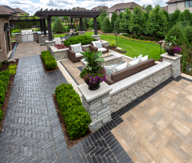

What makes a patio so incredible?
Tristan Lorincz
October 19, 2023
I know tht writing a blog about patios might seem a bit strange, but in my view there are few things in life more stunning than a well constructed patio. I've personally spend three summers building pations and it was the most enjoyable job i've ever had. Something about creating an amazing strucure of stone and rock has always made me feel a deep sense of acomplishment. Watching a empty, wasted space turn into a nice area for relaxation and enjoyment is always rewarding. A patio is the arena where family outings take place, where neighbors sit down together and relax, and where a family can spend a sunny weekend day enjoying a meal. A nice patio also signifies the hard work, and intensive labor that was enacted to create such a beautiful collection of stone. A well built pattio will have those who occupy it wondering why they would ever leave.

When first looking at a nice pation your initial thinking should be, "how long did this take to make?". By thinking about how many hours of hard labor it took to erect that patio, you will gain an understanding of how much respect your should give this patio. Another thing to consider is how many, if any, machines were used to construct this patio, if the patio was made by hand with no help from technology you should enjoy the intricacies and idosynchracies of the patio even more. If many machines were used to create this patio, then it's the speed of creation that you should be enamored by. You should appreciate the prompt, and swift nature of a machine created patio.
The easiest way to enjoy your time spent out on the patio is to setup some outdoor furniture, and relax with good company. Of course, a grill is always a great option out on the patio: hotdogs, burgers, brats, salmon, steak, chicken. All of these foods will bring great enjoyment to anyone lucky enough to be present them. An outdoor TV could lead to the patio being the perfect location to watch your favorites sports team. Being able to enjoy the outside air while watching your team could bring a whole new level of enjoyment. An adjacent idea to this is having a TV located inside, but visible from the patio. In this situation audio may become an issue, but the conversation with those on the patio with you will prove more enjoyable.
Building your own patio
Tristan Lorincz
October 19, 2023
Now that i've layed out a few ways to enjoy a patio, now it's time to talk about the construction. Patios don't just apear out of nowhere, it takes a motivated indavidual or group to build such a thing. With the right direction and materials you could build a patio over the course of a few months and impress everyone who knows about it. However, hiring professionals will save you lots of time and work, and the end result will probably be a whole lot nicer. Either way, i'll go over my basic layout of how to build a beautiful patio.

The first step when building a patio is to dig a hole, aka playing in the dirt. You have to dig a hole in order to give the patio a stable foundation that you know doesn't have any loose soil or rocks that are subject to shift. Hopefully you can get acess to a machine like a vermeer skid steer, otherwise this process will not be enjoyable. After digging your hole you need to start working on the wall of the patio. A decent amount of the wall will be underground eventaully to insure stability for the patio. This wall will also give you the clear perimeter for your patio. Once your outline is set by your wall you will fill the hole you dug with small rocks on the very bottom, and even smaller rocks on top of those rocks. After doing this it's crucial to compact the stones many times to set everything in place. This will be the base for your pavers. These rocks will need to be shifted around so that your patio is even, and then they'll need to be shifted slightly agin to make sure water drains in the correct direction off of your patio. After this step you'll add your drainage system running out of the bottom, this will keep your patio safe in case of heavy rain. After all of this you're ready to lay your pavers. With a level in hand you will carefully lay the pavers in your desired pattern, making sure that all of them are perfectly level with each other. This is the most fun, and satisfying step of the whole process, and when your patio will start to look good. After your pavers are down, you will have to add polymeric sand between every paver, and then pour water on the whole thing. This makes the pavers stick together, and keeps the patio intact. After this you just have to do finishing touches for aesthetic purposes, and you're all done.